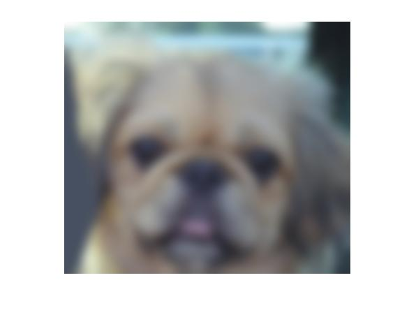

Project 1: Image Filtering and Hybrid Images

Example of a box filter. The dot product of blue pixels and h(x,y) produces the green pixel. For this Project 1, the boundaries of f(x,y) are padded with zeroes in order to produce an idential-resolution g(x,y) instead of the cropped version shown here.
Image filtering
The image-filtering algorithm in my_imfilter was written with a box filter, such that each pixel in the filtered image represents the dot product of nine pixels in the original image and the nine pixels of the filter. The nine pixels in the original image are found by iterating through every pixel in the image and adding the eight adjacent pixels (including diagonals) surrounding each pixel. For pixels on the boundaries of the original image, with less than eight adjacent pixels, zeroes are used in place of the missing adjacent pixels. The implementation was as follows:
- Iterate over the colors (r,g,b)
- Iterate over the dimensions (x,y) of the original image
- Iterate over the dimensions (x,y) of the filter
- Calculate the dot product of the two groups of nine mentioned above, for each color at each pixel
- Set each of the filtered image's values to be the dot products calculated above
%Code sample:
for c = 1:1:size(image,3)
for j = 1:1:image_y
for i = 1:1:image_x
sum = 0;
for l = 1:1:filter_y
for k = 1:1:filter_x
sum = sum + pad_image(i + k - 1, j + l - 1, c)*filter(k, l);
end
end
new_image(i, j, c) = sum;
end
end
end
I decided to calculate the values for each pixel individually within the for loops in order to get a better understanding of the actual numbers going into the filtered image's pixels.
Hybrid images
Once I had completed the image filtering algorithm, producing hybrid images from the five given image pairs was very straightforward. I retrieved the images and converted them into floating point format as demonstrated, then assigned one of each pair as the low-frequency image and the other as the high-frequency image after running them through my_imfilter. The hybrid was simply their sum. Adjusting the the cutoff frequency to produce the best image for each pair was done by trial-and-error. Since colors are lower frequency, I found that assigning more colorful images as the high-frequency image (in order to remove color) helped produce better hybrid images.
%Code sample:
low_frequencies = my_imfilter(image1, filter);
high_frequencies = image2 - my_imfilter(image2, filter);
hybrid_image = low_frequencies + high_frequencies;
Results of filtering algorithm
|  |

|

|